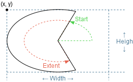

Class Arc
java.lang.Object
org.gannacademy.cdf.graphics.Drawable
org.gannacademy.cdf.graphics.Drawable2D
org.gannacademy.cdf.graphics.geom.Arc
- All Implemented Interfaces:
java.lang.AutoCloseable
public class Arc extends Drawable2D
Draw an arc as a section of an ellipse

Arcs are sections of ellipses, inscribed within their rectangular bounding box.
- Author:
- Seth Battis
-
Field Summary
Fields inherited from class org.gannacademy.cdf.graphics.Drawable
NO_STROKE, TRANSPARENT -
Constructor Summary
Constructors Constructor Description Arc(double x, double y, double width, double height, double start, double extent, DrawingPanel drawingPanel)Construct a new arc -
Method Summary
Modifier and Type Method Description doublegetAngleExtent()Extent angle of arcdoublegetAngleStart()Start angle of arcjava.awt.geom.Rectangle2DgetBounds()Enclosing bounding box of the underlyingShapedoublegetHeight()Height of bounding boxprotected java.awt.geom.Arc2DgetShapeAsArc()UnderlyingArc2DgeometrydoublegetWidth()Width of bounding boxdoublegetX()X-coordinate of bounding box origindoublegetY()Y-coordinate of bounding box originvoidsetAngleExtent(double extent)Set extent angle of arcvoidsetAngleStart(double start)Set start angle of arcvoidsetShape(java.awt.Shape shape)Replace the underlyingShapegeometry of the componentMethods inherited from class org.gannacademy.cdf.graphics.Drawable2D
getAsPath, getShape, getShapeAsRectangularShape, isEmpty, setFrame, setHeight, setLocation, setWidth, translateMethods inherited from class org.gannacademy.cdf.graphics.Drawable
close, contains, contains, contains, contains, draw, getDrawingPanel, getFillColor, getLocation, getPathIterator, getStroke, getStrokeColor, intersects, intersects, removeFromDrawingPanel, setDrawingPanel, setFillColor, setStroke, setStrokeColor, setX, setYMethods inherited from class java.lang.Object
clone, equals, finalize, getClass, hashCode, notify, notifyAll, toString, wait, wait, wait
-
Constructor Details
-
Arc
public Arc(double x, double y, double width, double height, double start, double extent, DrawingPanel drawingPanel)Construct a new arc
All window coordinates are measured in pixels, with the X-axis increasing from left to right and the Y-axis increasing from top to bottom. All window coordinates exist in the first quadrant.

- Parameters:
x- coordinate of originy- coordinate of originwidth- in pixelsheight- in pixelsstart- angle in degrees (measured counter-clockwise from 0° (a.k.a. "east")extent- angle in degrees of the arc (measured counter-clockwise fromstart)drawingPanel- on which to draw
-
-
Method Details
-
getShapeAsArc
protected java.awt.geom.Arc2D getShapeAsArc()UnderlyingArc2Dgeometry- Returns:
- Underlying
Arc2Dgeometry
-
setShape
Description copied from class:Drawable2DReplace the underlying
Shapegeometry of the componentReplacing the
Shapegeometry leaves other characteristics (fill, stroke) untouched.- Overrides:
setShapein classDrawable2D- Parameters:
shape- of geometry- Throws:
DrawableException- ifshapeis incompatible with the class
-
getAngleStart
public double getAngleStart()Start angle of arc- Returns:
- Angle measured counter-clockwise in degrees from 0° (East) of start of ellipse segment
- See Also:
Arc2D.getAngleStart()
-
getAngleExtent
public double getAngleExtent()Extent angle of arc- Returns:
- Angle measured counter-clockwise in degrees from start angle determining extent of arc
- See Also:
Arc2D.getAngleExtent()
-
setAngleStart
public void setAngleStart(double start)Set start angle of arc- Parameters:
start- Angle measured counter-clockwise in degrees from 0° (East) of start of ellipse segment- See Also:
Arc2D.setAngleStart(double)
-
setAngleExtent
public void setAngleExtent(double extent)Set extent angle of arc- Parameters:
extent- Angle measured counter-clockwise in degrees from start angle determining extent of arc- See Also:
Arc2D.setAngleExtent(double)
-
getHeight
public double getHeight()Description copied from class:DrawableHeight of bounding box -
getWidth
public double getWidth()Description copied from class:DrawableWidth of bounding box -
getX
public double getX()Description copied from class:DrawableX-coordinate of bounding box origin -
getY
public double getY()Description copied from class:DrawableY-coordinate of bounding box origin -
getBounds
public java.awt.geom.Rectangle2D getBounds()Description copied from class:DrawableEnclosing bounding box of the underlyingShape
-